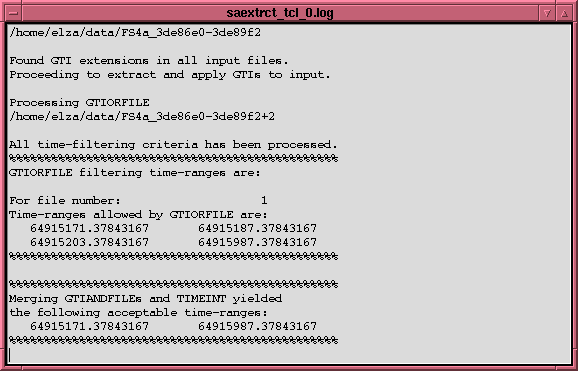

Terminal Task window
Terminal Task window

The "terminal window" is of limited usefulness since it does not
have a means of scrolling backwards to examine output that has
scrolled out of the window. Since this is a function of the
Expect package it is unlikely that this will be fixed anytime
soon. However, the user can use the
Output button in the flaunch window
to display a list of executed tasks
from which the appropriate task can be selected and an
output log of all
information can be viewed. The output log contains an up to date
list of all output that has been sent to the "terminal window"
for the selected task. Thus any information that has scrolled
out of that window can be examined in the "output log".
INDEX
Brian K. Elza
Last modified: Mon Jul 28 14:50:13 EDT